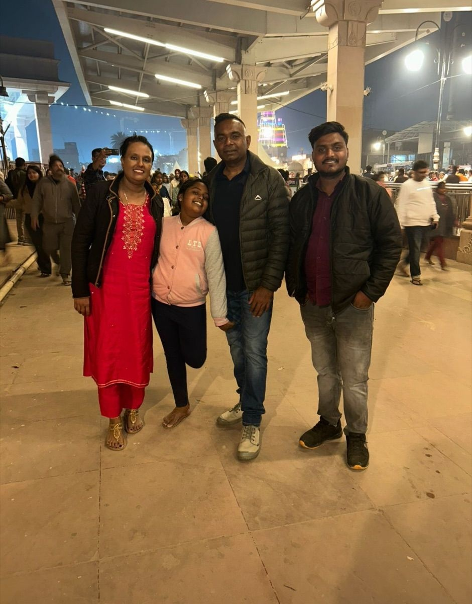

Home / Blog / Sawan Yatra VIP Guide

In this guide
The holy month of Shravan (Sawan) is one of the most auspicious periods of the year for Hindu pilgrims. Thousands of devotees travel across the country to seek blessings at the sacred Kashi Vishwanath temple (dedicated to Lord Shiva) in Varanasi and the newly built Ram Janmabhoomi Mandir in Ayodhya. However, during Sawan—especially on Sawan Somvars (Mondays)—temple waiting times can stretch up to 4 to 5 hours. For families traveling with children or senior citizens, this can be extremely exhausting.
The Reality of Sawan Crowd & Waiting Lines
During Sawan, the influx of Kanwariyas and local pilgrims is at an all-time high. In Varanasi, the streets leading to the Kashi Vishwanath Temple are heavily barricaded, forcing devotees to walk long distances in queues that stretch for miles. Similarly, Hanuman Garhi and Ram Mandir in Ayodhya witness massive assemblies of devotees. To make the pilgrimage comfortable, booking a pre-arranged entry or hiring a professional travel coordinator is highly recommended.
By planning your travel with a verified tour agent, you can secure **Sugam Darshan (VIP Entry)** assistance that allows you to access the temples through priority gates, bypassing the hours-long general public queues. Choosing our specialized Ayodhya Varanasi Tour Package ensures that you can execute your sacred tirth yatra in peace and comfort.
Kashi Vishwanath VIP Entry (Sugam Darshan) in Sawan
The Shri Kashi Vishwanath Temple Trust offers a **Sugam Darshan** ticket system. This pass allows devotees to enter through a dedicated queue, reducing the waiting time to just 20 to 30 minutes, even on crowded days. The Sugam Darshan tickets can be pre-booked on the official portal. However, due to the high demand in Shravan, slots are capped and fill up weeks in advance. Our team coordinates these VIP passes directly for our clients, ensuring your darshan is pre-confirmed before you travel.
Ayodhya Ram Mandir Sugam Entry Guide
Ayodhya Ram Mandir also provides a **Sugam Darshan Pass** and Aarti passes (for Shringar, Bhog, and Sandhya Aarti). These passes are free but highly limited. During the holy Sawan month, having a pre-registered pass is the only way to avoid the chaotic crowd lines. Additionally, senior citizens can avail of golf cart transfers from the parking zones to the main temple checkpoints. Our local guides assist you in coordinating these services smoothly at the temple gates.
How Our Yatra Seva Makes It Comfortable
At Ayodhya Dharshan Teerth Yatra Seva, we specialize in senior citizen-friendly and family-friendly pilgrimages. Here is how we ensure a comfortable yatra during Sawan:
- VIP Entry Coordination: We assist you in securing Kashi Vishwanath Sugam Darshan and Ayodhya Ram Mandir passes.
- AC transfers directly to closest points: We use local private AC cabs with experienced drivers who know which routes are open and closed during Sawan transit restrictions.
- Wheelchair Assistance: We coordinate wheelchair facility and companion guides for senior citizens.
- Convenient Hotel Stays: We arrange 3-star and 4-star clean hotels located near the temple corridors to minimize travel exhaustion.
Special Sawan Tour Packages (Starting ₹12,999)
Make your spiritual journey hassle-free this Sawan. We are offering special Shravan month tour circuits covering Ayodhya, Varanasi (Kashi Vishwanath Ganga Aarti), and Prayagraj Triveni Sangam. Book with no advance payment pressure and enjoy full booking flexibility.
Plan Your Sawan Yatra Today
Avoid long queues. Get free custom quotes for Sawan special VIP packages via WhatsApp or Phone call.